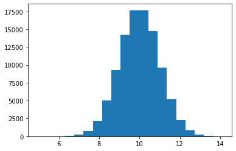

Day 10 Pre-class Assignment: Normal Distributions, Masking, and Log Plots
Contents
Day 10 Pre-class Assignment: Normal Distributions, Masking, and Log Plots#


✅ Put your name here
#Goals for today’s pre-class assignment#
Working with the descriptive statistics and visualizations of Normal Distributions
Practice using masks with NumPy arrays
Interpreting Log Plots
Assignment instructions#
This assignment is due by 11:59 p.m. the day before class, and should be uploaded into the appropriate “Pre-class assignments” submission folder. If you run into issues with your code, make sure to use Slack to help each other out and receive some assistance from the instructors. Submission instructions can be found at the end of the notebook.
1. Normal Distributions#
In today’s assignment we will be talking about the Normal (or Gaussian) distribution. A normal distribution of values looks something like this:
import matplotlib.pyplot as plt
import numpy as np
N_points = 100000
mean=10.0
stand_dev = 1.0
n_bins = 20
x = np.random.normal(mean,stand_dev,N_points)
plt.hist(x, bins=n_bins)
(array([1.0000e+00, 3.0000e+00, 1.1000e+01, 5.9000e+01, 2.1900e+02,
7.6500e+02, 2.1400e+03, 4.9920e+03, 9.3140e+03, 1.4213e+04,
1.7602e+04, 1.7666e+04, 1.4703e+04, 9.6580e+03, 5.2080e+03,
2.3180e+03, 8.3400e+02, 2.4000e+02, 4.5000e+01, 9.0000e+00]),
array([ 4.93281802, 5.3917954 , 5.85077277, 6.30975014, 6.76872752,
7.22770489, 7.68668226, 8.14565963, 8.60463701, 9.06361438,
9.52259175, 9.98156913, 10.4405465 , 10.89952387, 11.35850125,
11.81747862, 12.27645599, 12.73543336, 13.19441074, 13.65338811,
14.11236548]),
<BarContainer object of 20 artists>)

Which you may have seen before (it’s also called a bell curve). Normal distributions are very important in statistics, primarily because most distributions eventually become Normal distributions if you collect enough samples (this is called the Central Limit Theorem).
1.1#
Change the number of data points (N_points) and plot the resulting distribution. Make four subplots, showing distributions for N_points= 10, 100, 1000, and 10000. (Use mean=10.0 and stand_dev = 1.0)
#Insert code here
1.2#
What do you notice about how the shape of the distribution changes as you use more data points?
Write your answer here
1.3#
Run your code above again, so you get a new set of data points for your plots. What do you notice about how the different plots change when you pick new data points?
Write your answer here
Let’s talk about the important properties of a Normal distribution.
1.4 Mean & Median#
Make four distributions (using N_points = 100000 and stand_dev=1.0) with means of 0.0, 1.0, 5.0, 10.0. For each distribution, calculate the mean and median values.
#Insert code here
1.5#
What do you notice about the mean and median values for the five distributions? How do they compare to one another?
Write your answer here
1.6 Standard Deviation#
Make four distributions (using N_points = 100000 and mean=10.0) with standard deviations of 0.5, 1.0, 5.0, and 10.0. Make four subplots showing each of the distributions.
#Insert code here
1.7#
What do you notice about the shape of the five distributions? How do they compare to one another? What effect does changing the standard deviation have on the distributions? NOTE: If you don’t notice a difference right away, try setting xlim to \([-40,40]\) for each subplot
Write your answer here
2. Masking#
Masking is an extremely important and absurdly useful tool that we will be adding to our coding tool box. Fundamentally, Masking is a process that allows us to select specific parts of our data that meet some condition. Let’s work through some examples, to better understand what this means.
Let’s start by looking at the random set of numbers.
vals = np.array([3, 11, 6, 9, 7, 12, 8, 11, 5, 3, 15, 13])
2.1#
Write a piece of code that uses a for loop and an if statement to select all values of vals that are above 8. Append the values to a new list and print them out.
#Insert code here
What we just did was select a subset of our data; specifically, all x values greater than 8. Now, let’s do the same thing using Masking. The code below creates a mask and then uses that mask to select all of the data points that meet our condition.
mask = vals > 8
vals_masked = vals[mask]
2.2#
Let’s break this code down, piece by piece. First, write a piece of code that prints mask.
#Insert code here
2.3#
You should see a list of Boolean values (True or False). Compare your mask values to the values of vals. What do you notice?
Write your answer here
2.4#
Now print out the values of vals_masked.
#Insert code here
2.5#
What values does vals_masked contain? How are these values connected to vals, mask, and the list that you created in 2.1?
Write your answer here
2.6#
Try tinkering with the mask generation code (line 1 from the cell in 2.1) by changing the condition (e.g., values below 8, values above 11, etc.). Print out the mask and vals_masked values for each one.
#Insert code here
2.7#
Take a moment and reflect. What is a mask? What does masking do?
Write your answer here
2.8#
Before moving on, explain the concept of Masking as if you were talking to someone who has never coded before.
Write your answer here
3. Interpretating Log Plots#
For this next exercise, we will explore the utility and interpretation of log plots. We’re used to linear plots; these are plots where the space between 1 and 2 is the same as it is between 3 and 4 (or 8 and 9 or 800 and 801). The step size is linear, hence the name.
In a log plot, though, the space between 1 and 2 is the same as the space between 2 and 4 (or 4 and 8 or 800 and 1600). In a log plot, the step size is multiplicative (e.g., all of the previous examples increased by a factor of 2).
Log plots are useful when you have a large dynamic range. That is, when the difference between the smallest thing you care about and the largest thing you care about is BIG.
Let’s take another look at the economic data from your day nine exercise. The filename is GDP_Cleaned.csv, and you can find it on the course website. (as the name suggests, we’ve cleaned up the dataset for you).
3.1#
Use Pandas to read in GDP_Cleaned.csv.
#Write your code here
3.2#
Make a plot of the GDP versus time (Year) for both the United States and Bangladesh.
#Write your code here
3.3#
Based on this plot, what can you say about the growth of the economy in Bangladesh?
Write your answer here
3.4#
Now remake the same plot, but this time with the yscale set to log (you may need to look how to do this).
#Write your code here
3.5#
Using the log-plot, what can you say about the growth of the economy in Bangladesh? Use the plot to read off the starting and ending values (i.e., the economy of Bangladesh in 1960 and 2021).
Write your answer here
3.6#
Now try setting xscale to be log as well.
#Write your code here
3.7#
What do you notice? How large is the dynamic range of the x-axis values (i.e., by what multiplicative value does the x-values increase?)
Write your answer here
Assignment wrap-up#
Please fill out the form that appears when you run the code below. You must completely fill this out in order to receive credit for the assignment!
from IPython.display import HTML
HTML(
"""
<iframe
src="https://cmse.msu.edu/cmse201-pc-survey"
width="800px"
height="600px"
frameborder="0"
marginheight="0"
marginwidth="0">
Loading...
</iframe>
"""
)
Congratulations, you’re done!#
Submit this assignment by uploading it to the course Desire2Learn web page. Go to the “Pre-class assignments” folder, find the appropriate submission link, and upload it there.
See you in class!
© Copyright 2021, Michigan State University Board of Trustees